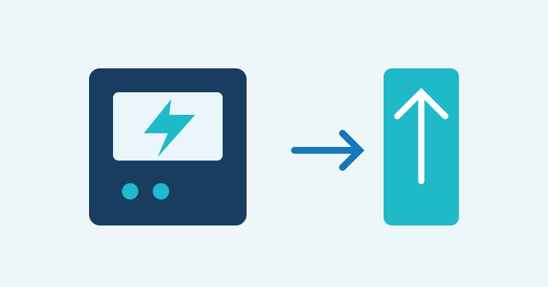

Telecom Site Development
Support for telecom tower construction, site preparation, equipment installation and field coordination.
Learn more →Vital Byte supports communication networks with telecom infrastructure, dependable power solutions, internet services and technical support across Afghanistan.
We bring together field infrastructure, power continuity and internet access to help people and organizations stay connected.
Support for telecom tower construction, site preparation, equipment installation and field coordination.
Learn more →
Power systems that help keep telecom sites operating, including backup power and maintenance support.
Learn more →
Internet packages, network connectivity and technical assistance for customers and organizations.
View packages →Since 1385 (Solar Hijri), Vital Byte has focused on telecommunications-related activities and practical services that support network operations. Our work brings together infrastructure, power and internet solutions.
Our aim is to make dependable connectivity and telecom support more accessible.
We learn about each site's or customer's communication and power requirements.
We coordinate practical infrastructure, internet or power services for the requested need.
We provide guidance and technical follow-up to help maintain service quality.
Contact Vital Byte to discuss a service request or learn about available packages.